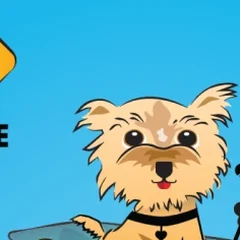
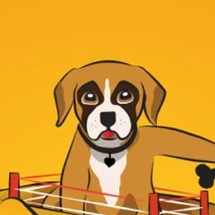

Frida Puplo0 / 100

Pupstein0 / 100

K-Pup0 / 100
 Deck
Deck Penalties
Penalties
You0 / 100
Cards you play go here
Turn your phone sideways to play
The practice game is played sideways, so the whole table fits on your screen
Your game starts here
Same table, same dogs. From here on it’s a real game